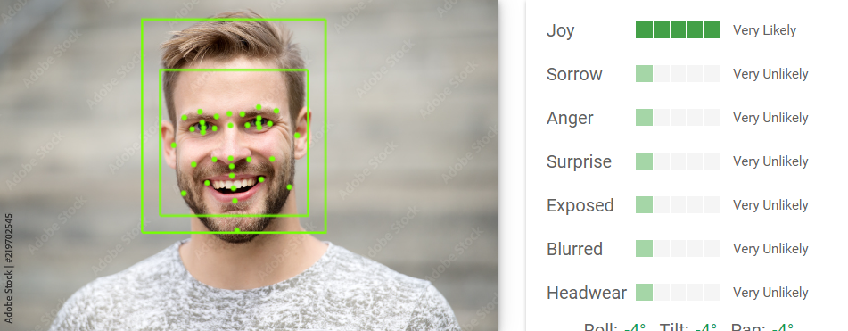
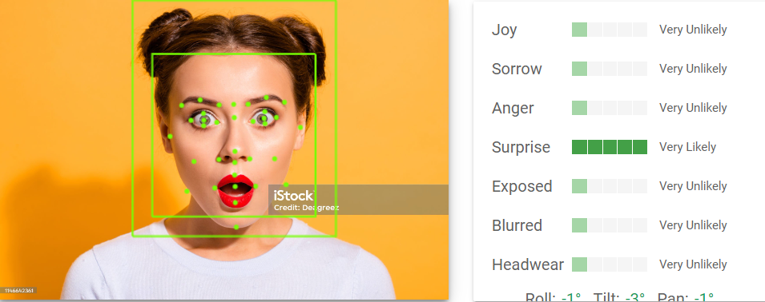

이 사진은 샘플 사진입니다. 왼쪽에 있는 빈칸에 표정이 담겨진 사진을 넣습니다.
이 사진은 샘플 사진입니다. 왼쪽에 있는 빈칸에 표정이 담겨진 사진을 넣습니다.

샘플 사진을 인공지능이 분석하고 표정을 감지하여 JOY라는 결과를 도출해내는 것을 알 수 있습니다.
이 사진은 두 번째 샘플 사진입니다. 왼쪽에 있는 빈칸에 표정이 담겨진 사진을 넣습니다.

샘플 사진을 인공지능이 분석하고 표정을 감지하여 SUPRISE라는 결과를 도출해내는 것을 알 수 있습니다.